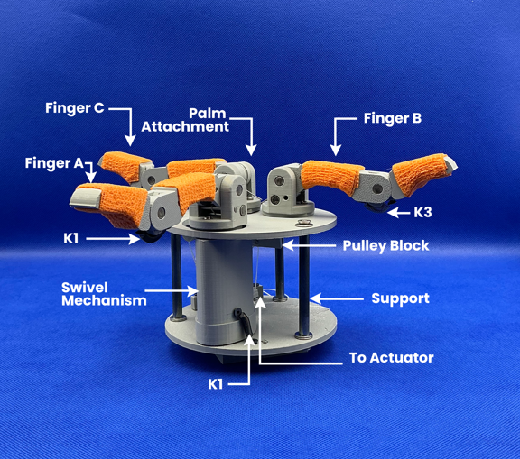

Featured Research
The PhaseHand
A bio-inspired underactuated robotic gripper designed for adaptive grasping. The system leverages compliance and minimal actuation to achieve robust, versatile object interaction.
Link to paper →Keywords: underactuation, grasping, design and control, multifingered hands.